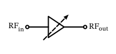
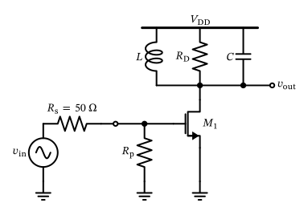
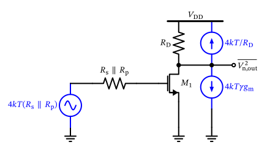
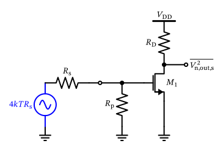
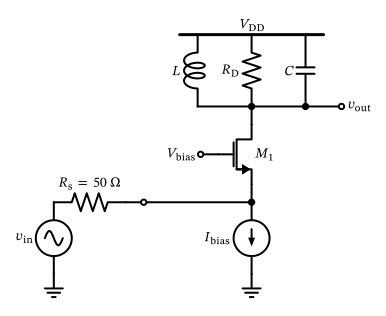
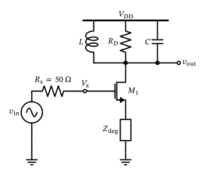
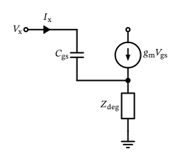
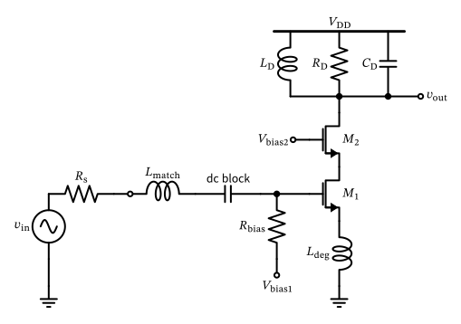
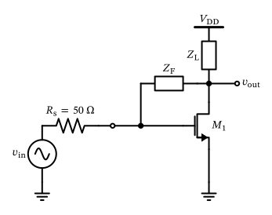

Low Noise Amplifiers

Figure 31: Block diagram of an LNA.
As shown in Section 2.3.4 , the sensitivity of a receiver is determined (besides the channel bandwidth and the SNR requirement of the demodulator) mainly by the noise figure of the receiver. The noise figure is in turn determined by the noise figure of the first few components in the receive chain, as exemplified in Equation 22 . Hence, as shown in Figure 23 and Figure 24 , low noise amplifiers (LNAs) are usually the first active building block in a receiver after the antenna, switches, and initial RF filtering.
The main purpose of the LNA is to amplify the received signal with as little additional noise as possible, so that the subsequent stages in the receive chain can operate with a better signal-to-noise ratio (SNR) and do not increase the receiver NF substantially. The LNA is a critical component in the receiver design, and its performance has a significant impact on the overall sensitivity of the receiver.
Block diagram of an LNA. Typically, the LNA input is impedance matched to 50 Ω, while the output is often not matched if the LNA is integrated on-chip. Often, the LNA gain is adjustable (shown with the arrow) to allow for gain control in the receiver depending on the signal conditions. The LNA also might have a low-power bypass mode to reduce the power consumption of the LNA for sufficiently strong signals.
Impedance Matching
The LNA as a building block is shown in Figure 31 . It is usually designed for a specific frequency band, e.g., the 2.4 GHz ISM band or the 5 GHz WLAN band, and is typically designed for a specific impedance, e.g., 50 Ω, which is the standard impedance for RF systems. Impedance matching is usually mandated at the input; the output impedance matching is only required if the output of the LNA goes off-chip; if it is kept on-chip, impedance matching is often not needed. The LNA is also designed to be sufficiently linear, i.e., to not introduce significant distortion to the amplified signal; however, compared to the noise requirements, linearity is often less critical.
Impedance Matching
The antenna is designed for a specific impedance (e.g., 50 Ω); a mismatch reflects signal power
RF filters in front of the LNA need the correct termination
Transmission lines need a match to avoid reflections and standing waves
Impedance Matching
\[
\Gamma = \frac{Z_{\mathrm{in}} - Z_0}{Z_{\mathrm{in}} + Z_0}
\tag{31}\]
To quantify the “quality” of an impedance match, the reflection coefficient \(\Gamma\) is often used, which is defined as (Pozar 2011 ) :
where \(Z_0\) is the characteristic impedance of the system (usually 50 Ω) and \(Z_{\mathrm{in}}\) is the input impedance of the LNA. For a passive input impedance, i.e., \(\Re \{ Z_\mathrm{in} \} \geq 0\) , the reflection coefficient \(\Gamma\) is a complex number with a magnitude between 0 and 1 (as can be readily shown from Equation 31 ), where \(|\Gamma| = 0\) indicates a perfect match and \(|\Gamma| = 1\) indicates a complete mismatch. If the input presents a negative real part, then \(|\Gamma| > 1\) , i.e., the port reflects more power than is incident on it. This is exactly the condition we must avoid at all costs, and which we investigate in Section 4.2 . This reflection coefficient can be represented on the Smith chart shown in Figure 32 . A useful interactive tool to draft a matching network and visualize it on a Smith chart is this website .
Impedance Matching
Smith chart showing constant resistance and reactance circles for impedance matching in RF circuits. The blue dot indicates perfect matching at 50 Ω, the green dot shows an open, and the red dot shows a short. The red dashed circle indicates a mismatch with RL = 10 dB.
Impedance Matching
\[
\text{RL} = -20 \log_{10} |\Gamma| = 20 \log_{10} \left| \frac{Z_\mathrm{in} + Z_0}{Z_\mathrm{in} - Z_0} \right|
\tag{32}\]
However, in practice, the more commonly used metric for impedance matching is the return loss (RL), which is defined as (Pozar 2011 ) :
A higher return loss indicates a better impedance match. A return loss of 10 dB (see Figure 32 ) indicates that 10% of the signal power is reflected back, while a return loss of 20 dB indicates that only 1% of the signal power is reflected back. In practice, a return loss of at least 10 dB is desired, with higher (positive) values being better (Bird 2009 ) .
Impedance Matching
Fundamental limit on how well a load can be matched over a bandwidth (Fano 1950 ; Pozar 2011 , ch. 5.9) :
\[
\int_{0}^{\infty} \ln \left( \frac{1}{|\Gamma(\omega)|} \right) d\omega \leq \frac{\pi}{R C}
\tag{33}\]
for an \(R \parallel C\) load: match bandwidth trades off against return loss.
Match \(|\Gamma_\mathrm{m}|\) over \(\Delta \omega / \omega_0\) , with \(Q = \omega_0 R C\) :
\[
\frac{\Delta \omega}{\omega_0} \leq \frac{\pi}{Q} \cdot \frac{1}{\ln(1/|\Gamma_\mathrm{m}|)}
\]
Example: 20 dB return loss (\(|\Gamma_\mathrm{m}| = 0.1\) ) over 30% bandwidth requires \(Q \leq 4.5\) .
The Bode-Fano criterion states that for a given load impedance and a given bandwidth, there is a fundamental limit to how well an impedance can be matched over that bandwidth; this criterion is important in the design of LNAs! The Bode-Fano criterion can be expressed mathematically as (Fano 1950 ; Pozar 2011 , ch. 5.9)
where \(\Gamma(\omega)\) is the frequency-dependent reflection coefficient, \(R\) is the load resistance, and \(C\) is the load capacitance (for an \(R \parallel C\) load). This criterion implies that achieving a very good impedance match (i.e., a low reflection coefficient) over a wide bandwidth is fundamentally limited by the properties of the load. In practice, this means that there is a trade-off between the bandwidth of the match and the achievable return loss in an LNA design.
If we assume that we strive for match with \(|\Gamma_\mathrm{m}|\) over a fractional bandwidth \(\Delta \omega / \omega_0\) , we can derive from the Bode-Fano criterion (and using that \(Q = \omega_0 R C\) for a parallel \(RC\) circuit) that
For example, if we want to achieve a return loss of 20 dB (i.e., \(|\Gamma_\mathrm{m}| = 0.1\) ) over a fractional bandwidth of 30%, we find that the quality factor of the load (i.e., the input stage of the LNA) needs to be \(Q \leq 4.5\) .
Amplifier Stability
\[
K = \frac{1 - |S_{11}|^2 - |S_{22}|^2 + |\Delta|^2}{2 |S_{12} S_{21}|}
\tag{34}\]
\[
\Delta = S_{11} S_{22} - S_{12} S_{21}.
\tag{35}\]
When designing amplifiers, it is generally important to ensure that the amplifier is stable, i.e., that it does not oscillate! Under well-defined conditions, this is already complicated enough, but in RF design, the situation is even more complex, as the stability is usually a function of source and load impedances, which, especially when going off-chip, are often not well defined.
Hence, we have a two-port network, where we need to ensure that the amplifier is stable for all possible source and load impedances, which represent a large number of potential simulation cases. Luckily, there are well-defined criteria to check the stability of a two-port network.
One test for unconditional stability is the Rollet stability factor \(K\) , which is defined as (Pozar 2011 )
with
For unconditional stability, the following conditions must be met:
Amplifier Stability
\[
K > 1 \quad \text{and} \quad |\Delta| < 1.
\]
\[
\mu = \frac{1 - |S_{11}|^2}{|S_{22} - S_{11}^* \Delta| + |S_{12} S_{21}|}.
\tag{36}\]
If these conditions are not met, the amplifier is potentially unstable, i.e., it might oscillate for some source and load impedances. In this case, further analysis is required to determine the stability of the amplifier.
Unfortunately, the \(K\) -factor test only provides a binary answer (stable/unstable) and does not provide any information about how close the amplifier is to instability. For this purpose, the so-called \(\mu\) stability factor is used, which is defined as (Edwards and Sinsky 1992 )
For unconditional stability, the following condition must be met:
Amplifier Stability
\[
\mu > 1
\]
The \(\mu\) -factor provides a measure of how close the amplifier is to instability; the larger the \(\mu\) -factor, the more stable the amplifier is. A \(\mu\) -factor of 1.5 or higher is usually considered sufficient for practical applications.
What we can learn from Equation 34 , Equation 35 , and Equation 36 is that to achieve a stable amplifier, we need to minimize the reverse gain \(S_{12}\) (also called isolation) and the input and output reflection coefficients \(S_{11}\) and \(S_{22}\) . In practice, this means that we need to design the amplifier with good reverse isolation and good input and output matching. Cascode stages are often used in RF amplifiers to achieve high gain and good isolation.
Resistively Matched Common-Source LNA
Resistively Matched Common-Source LNA

Figure 33: A simple LNA with resistive input matching and a parallel \(RLC\) tank circuit as a load (biasing details are omitted).
The key question is now how to design an LNA with low noise figure and an input impedance matched to 50 Ω? In order to appreciate this design challenge, we will first try a naive approach, using a common-source amplifier with resistive termination, as shown in Figure 33 .
A simple LNA with resistive input matching and a parallel \(RLC\) tank circuit as a load (biasing details are omitted). The LNA is driven by a 50 Ω source.
Resistively Matched Common-Source LNA
\[
F = \frac{\text{total noise at output}}{\text{noise at output due to source only}}.
\tag{37}\]
If we assume the gate capacitance of \(M_1\) is negligible, we can achieve good input impedance matching by choosing \(R_\mathrm{p} = R_\mathrm{s} = 50\,\Omega\) . The voltage gain of this simple common-source LNA is given by \(A_\mathrm{v} = -g_\mathrm{m}R_\mathrm{D}\) , neglecting capacitances and \(g_\mathrm{ds}\) of \(M_1\) (we assume that the load tank is tuned to the desired frequency with \(\omega_0 = 1 / \sqrt{L C}\) ).
How can we calculate the noise figure of this simple LNA? We formulate
We derive a small-signal equivalent circuit of Figure 33 , which is shown in Figure 34 , to calculate the total noise at the output of the LNA.
Resistively Matched Common-Source LNA

Figure 34: Equivalent circuit of resistively matched common-source LNA (noise sources shown in blue).
Resistively Matched Common-Source LNA
\[
\overline{V_\mathrm{n,out,1}^2} = A_\mathrm{v}^2 \cdot 4 k T (R_\mathrm{s} \parallel R_\mathrm{p}) = (g_\mathrm{m}R_\mathrm{D})^2 \cdot 4 k T (R_\mathrm{s} \parallel R_\mathrm{p})
\]
\[
\overline{I_\mathrm{n,out}^2} = 4 k T \gamma g_\mathrm{m}+ \frac{4 k T}{R_\mathrm{D}}
\] \[
\overline{V_\mathrm{n,out,2}^2} = R_\mathrm{D}^2 \cdot \overline{I_\mathrm{n,out}^2} = 4 k T \gamma g_\mathrm{m}R_\mathrm{D}^2 + 4 k T R_\mathrm{D}
\]
With the help of Figure 34 , we can calculate the total output noise power spectral density as
and
so that in total
Resistively Matched Common-Source LNA
\[
\begin{split}
\overline{V_\mathrm{n,out}^2} &= \overline{V_\mathrm{n,out,1}^2} + \overline{V_\mathrm{n,out,2}^2}\\
&= 4 k T \left[ (g_\mathrm{m}R_\mathrm{D})^2 (R_\mathrm{s} \parallel R_\mathrm{p}) + \gamma g_\mathrm{m}R_\mathrm{D}^2 + R_\mathrm{D} \right].
\end{split}
\tag{38}\]
We now need to find the output noise coming from the source only. For this we can use the equivalent circuit in Figure 35 , to formulate the output noise due to the source only.
Resistively Matched Common-Source LNA

Figure 35: Equivalent circuit to calculate the output noise from the input.
Resistively Matched Common-Source LNA
\[
\overline{V_\mathrm{n,out,s}^2} = A_\mathrm{v}^2 \cdot 4 k T R_\mathrm{s} \cdot \left(\frac{R_\mathrm{p}}{R_\mathrm{s} + R_\mathrm{p}} \right)^2.
\tag{39}\]
\[
F = \frac{\overline{V_\mathrm{n,out}^2}}{\overline{V_\mathrm{n,out,s}^2}} = 1 + \frac{R_\mathrm{s}}{R_\mathrm{p}} + \frac{\gamma R_\mathrm{s}}{g_\mathrm{m}(R_\mathrm{s} \parallel R_\mathrm{p})^2} + \frac{R_\mathrm{s}}{g_\mathrm{m}^2 (R_\mathrm{s} \parallel R_\mathrm{p})^2 R_\mathrm{D}}.
\tag{40}\]
Resistively Matched Common-Source LNA
Common-source LNA with Resistive Matching
As an exercise to calculate noise behavior of circuits, derive and thus re-confirm the result of Equation 40 by yourself.
Resistively Matched Common-Source LNA
\[
F \overset{g_\mathrm{m}\gg}{=} 1 + \frac{R_\mathrm{s}}{R_\mathrm{p}} = 2
\]
How can we interpret Equation 40 ? We see that we can minimize the noise factor by maximizing \(g_\mathrm{m}\) . We then have a noise factor of
so we see that we are limited to a minimum noise figure of 3 dB, even if we spend the bias current to make \(g_\mathrm{m}\) very large. We can go below a noise figure of 3 dB only if we give up on return loss and choose \(R_\mathrm{p} > R_\mathrm{s}\) , however, this means that the input is no longer matched to 50 Ω, so there are bounds on how far we can go. Hence, this simple resistively matched common-source LNA is not a good choice for a low-noise amplifier, with one exception: For very wideband amplifiers, where an NF larger than 3 dB is acceptable, this configuration might be a good choice (often the solution shown in Section 4.4 is still better).
We see that we are stuck at high noise figures if we realize the real part of the input impedance with a resistor. This leaves us with the question of how to realize the real part of the input impedance otherwise. We will answer this question in the next sections (spoiler: feedback)!
Common-Gate LNA

Figure 36: Circuit diagram of a common-gate LNA (biasing details are omitted).
We remember from our analog circuit design lecture that the common-gate configuration has an input impedance of \(1/g_\mathrm{m}\) (conveniently neglecting parasitic capacitances). Hence, if we choose \(g_\mathrm{m}= 1/50\,\Omega = 20\,\text{mS}\) , we can achieve input matching to 50 Ω without using a resistor at the input. This is the key idea of the common-gate LNA, which is shown in Figure 36 .
Common-Gate LNA
\[
\begin{split}
\overline{V_\mathrm{n,out}^2} &= k T \left[ (g_\mathrm{m}R_\mathrm{D})^2 R_\mathrm{s} + \gamma g_\mathrm{m}R_\mathrm{D}^2 + 4 R_\mathrm{D} \right]\\
&= k T \left( \frac{R_\mathrm{D}^2}{R_\mathrm{s}} + \gamma \frac{R_\mathrm{D}^2}{R_\mathrm{s}} + 4 R_\mathrm{D} \right).
\end{split}
\tag{41}\]
By inspecting Figure 36 and following the practice from Section 4.3 , we can directly write down the output noise voltage as (setting \(g_\mathrm{m}^{-1} = R_\mathrm{s}\) )
The output noise due to the source only is given by
Common-Gate LNA
\[
\overline{V_\mathrm{n,out,s}^2} = k T \frac{R_\mathrm{D}^2}{R_\mathrm{s}}.
\tag{42}\]
\[
F = 1 + \gamma + \frac{4 R_\mathrm{s}}{R_\mathrm{D}} \approx 1 + \gamma \quad \text{for} \quad R_\mathrm{D} \gg R_\mathrm{s}.
\tag{43}\]
Finally, we can use Equation 41 and Equation 42 with Equation 37 to calculate the noise figure of the common-gate LNA as
With a classical long-channel \(\gamma = 2/3\) , we can achieve a minimum noise figure of 2.2 dB, which is already better than the resistively matched common-source LNA in Section 4.3 . However, using short-channel MOSFETs, \(\gamma\) is often larger than 1, so that the minimum noise figure of the common-gate LNA is often larger than 3 dB (Razavi 2011 ) .
Inductively-Degenerated Common-Source LNA
Inductively-Degenerated Common-Source LNA

Figure 37: A common-source MOSFET stage with degeneration impedance (biasing details are omitted).
As we have seen in Section 4.4 , circuit techniques (feedback) can be used to realize the real part of an input impedance without the associated thermal noise of a resistor. We now try something different, in the hope that it will result in an even lower noise figure. We construct an LNA based on a common-source MOSFET amplifier, but we add an impedance \(Z_\mathrm{deg}\) into the source line for series-series feedback (Gray et al. 2009 ) . This arrangement is shown in Figure 37 .
Inductively-Degenerated Common-Source LNA

Figure 38: Equivalent small-signal circuit of the input stage around \(M_1\) .
We now extract the small-signal equivalent circuit of the input stage of Figure 37 , which is shown in Figure 38 , to calculate the input impedance (we ignore \(g_\mathrm{ds}\) for this analysis to simplify the derivation).
Inductively-Degenerated Common-Source LNA
\[
V_\mathrm{x} = V_\mathrm{gs}+ Z_\mathrm{deg} (I_\mathrm{x} + g_\mathrm{m}V_\mathrm{gs})
\]
\[
Z_\mathrm{in} = \frac{V_\mathrm{x}}{I_\mathrm{x}} = \frac{1}{s C_\mathrm{gs}} + Z_\mathrm{deg} + \frac{g_\mathrm{m}Z_\mathrm{deg}}{s C_\mathrm{gs}}.
\tag{44}\]
We find that
with \(V_\mathrm{gs}= I_\mathrm{x} / s C_\mathrm{gs}\) , so that we can write the input impedance as
The final term in Equation 44 is the interesting one: By choosing \(Z_\mathrm{deg}\) to be inductive (which we can do by using either an on-chip or an off-chip inductor), we can realize a real part of the input impedance. Choosing \(Z_\mathrm{deg} = s L\) , we find that
Inductively-Degenerated Common-Source LNA
\[
Z_\mathrm{in} = \frac{1}{s C_\mathrm{gs}} + s L + \frac{g_\mathrm{m}L}{C_\mathrm{gs}}.
\]
\[
\Re \{ Z_\mathrm{in} \} = \frac{g_\mathrm{m}L}{C_\mathrm{gs}}.
\tag{45}\]
By proper choice of \(L\) and \(C_\mathrm{gs}\) , we can achieve input matching to 50 Ω at the desired frequency \(\omega_0\) . We find that the real part of the input impedance is given by
Without proof (refer to (Razavi 2011 ; Darabi 2020 ) for a derivation), we state the noise factor of this input stage (with some simplification) as (\(\omega_\mathrm{T} \approx g_\mathrm{m}/ C_\mathrm{gs}\) is the transition frequency of the MOSFET)
Inductively-Degenerated Common-Source LNA
\[
\begin{split}
F &= 1 + \frac{\gamma R_\mathrm{s} \omega_0^2 C_\mathrm{gs}^2}{g_\mathrm{m}}\\
&\approx 1 + \gamma R_\mathrm{s} g_\mathrm{m}\left( \frac{\omega_0}{\omega_\mathrm{T}} \right)^2\\
&\approx 1 + \gamma \omega_0^2 C_\mathrm{gs} L.
\end{split}
\tag{46}\]
Finally, we have an LNA input stage configuration that allows us to achieve a noise figure below 3 dB, even with \(\gamma > 1\) , by proper choice of a fast transistor with \(\omega_\mathrm{T} \gg \omega_0\) (and thus small \(C_\mathrm{gs}\) ). The inductively-degenerated common-source LNA is a widely used LNA input stage configuration in modern RFICs.
Note that the noise performance of Equation 46 cannot be lowered towards \(F=1\) because \(g_\mathrm{m}\) , \(L\) , and \(C_\mathrm{gs}\) are tied together by the input matching condition Equation 45 , and we have neglected the induced gate noise of the MOSFET and other effects (Razavi 2011 ) .
A bit more detailed schematic is shown in Figure 39 . The inductor \(L_\mathrm{match}\) is used to match the input impedance to 50 Ω at the desired frequency, \(L_\mathrm{deg}\) is used to realize the real part of the input impedance, \(R_\mathrm{bias}\) is used to bias the gate of \(M_1\) , \(M_2\) is a cascode transistor which increases the output impedance and thus the gain of the stage (plus it improves the reverse isolation), and \(R_\mathrm{D}\) , \(L_\mathrm{D}\) , and \(C_\mathrm{D}\) form a load tank which provides high gain at the desired frequency. A dc block is used at the input so that the bias point of \(M_1\) is not corrupted by the input signal source. The bias voltage \(V_\mathrm{bias2}\) sets the operating point of the cascode transistor \(M_2\) .
Inductively-Degenerated Common-Source LNA

Figure 39: An (almost complete) common-source MOSFET stage with degeneration impedance and cascode.
Feedback LNA
What is missing in Figure 39 is a form of frequency tuning of the load tank to the frequency of interest, and support for different gain modes. Apart from these details, this LNA circuit is a good starting point for a practical LNA design.
Feedback LNA

Figure 40: A shunt-feedback LNA.
One drawback of the inductively-degenerated common-source LNA (besides its limited bandwidth) is the use of at least one inductor. If the inductor is placed on-chip, it has a comparatively large size, and if it is implemented in the package (via a bondwire) or on the PCB it adds complexity or cost to the bill-of-materials (BOM).
As an alternative, if the CMOS technology is sufficiently fast, a shunt feedback amplifier, as shown in Figure 40 , might be a good choice (Gray et al. 2009 ) .
Feedback LNA
\[
Z_\mathrm{in} = \frac{Z_\mathrm{F} + Z_\mathrm{L}}{1 + g_\mathrm{m}Z_\mathrm{L}}.
\tag{47}\]
Feedback LNA
Derivation of the Shunt-Feedback Input Impedance
Test voltage \(V_x\) at the gate (ignoring \(g_\mathrm{ds}\) and \(C_\mathrm{gs}\) ); the gate current flows through \(Z_\mathrm{F}\) :
\[
I_x = \frac{V_x - V_d}{Z_\mathrm{F}}.
\]
\[
\frac{V_d - V_x}{Z_\mathrm{F}} + \frac{V_d}{Z_\mathrm{L}} + g_\mathrm{m}V_x = 0
\]
Solving for \(V_d\) and substituting gives Equation 47 :
\[
\begin{split}
I_x &= \frac{V_x - V_d}{Z_\mathrm{F}}\\
&= \frac{V_x}{Z_\mathrm{F}} \cdot \frac{Z_\mathrm{F} + Z_\mathrm{L} - Z_\mathrm{L}(1 - g_\mathrm{m}Z_\mathrm{F})}{Z_\mathrm{F} + Z_\mathrm{L}}\\
&= \frac{V_x\,(1 + g_\mathrm{m}Z_\mathrm{L})}{Z_\mathrm{F} + Z_\mathrm{L}},
\end{split}
\]
We apply a test voltage \(V_x\) at the gate and find the resulting current \(I_x\) (ignoring \(g_\mathrm{ds}\) and the gate capacitance for simplicity). Because the only path into the gate is through \(Z_\mathrm{F}\) , we have
Applying KCL at the drain node, where currents leave through \(Z_\mathrm{F}\) , through \(Z_\mathrm{L}\) to \(V_\mathrm{DD}\) (ac ground), and via the transistor current source \(g_\mathrm{m}V_x\) :
Rearranging for \(V_d\) and substituting back
which gives Equation 47 directly.
Feedback LNA
\[
F = 1 + \left| \frac{Z_\mathrm{F} + R_\mathrm{s}}{g_\mathrm{m}Z_\mathrm{F} + 1} \right|^2 \cdot \frac{\gamma g_\mathrm{m}+ \Re \{ Y_\mathrm{L} \} }{\Re \{ Z_\mathrm{in} \}},
\tag{48}\]
\[
Z_\mathrm{in} = \frac{1}{g_\mathrm{m}}
\]
The noise factor of the shunt feedback LNA is given by
which holds exactly for reactive (noiseless) \(Z_\mathrm{F}\) and \(Z_\mathrm{L}\) (where \(\Re\{Y_F\}=0\) ), and for a matched input (\(R_\mathrm{s} = \Re\{Z_\mathrm{in}\}\) ) (Darabi 2020 ) .
As you can see from Equation 48 , by making \(g_\mathrm{m}\) large (and spending enough bias current), the noise figure can be made arbitrarily small! Depending on the choice of \(Z_\mathrm{F}\) and \(Z_\mathrm{L}\) , the input impedance of this LNA can be changed in interesting ways.
By setting \(Z_\mathrm{L} \rightarrow \infty\) (e.g., by biasing with a current source and high-impedance loading), we find that
which is independent of \(Z_\mathrm{F}\) and is a well-known result for a common-source stage. The disadvantage of this configuration is the noise factor, which (given that \(Z_\mathrm{F}\) is sufficiently large) tends towards \(F = 1 + \gamma\) , which is the same as for the common-gate LNA.
A bit more interesting is the case when \(g_\mathrm{m}Z_\mathrm{L} = A_0\) and \(Z_\mathrm{L} \gg Z_\mathrm{F}\) , which results in
Feedback LNA
\[
Z_\mathrm{in} = \frac{Z_\mathrm{L}}{1 + A_0}
\]
\[
Y_\mathrm{in} = \frac{1}{Z_\mathrm{in}} = \frac{g_\mathrm{m}C_\mathrm{F}}{C_\mathrm{L} + C_\mathrm{F}} + s \frac{C_\mathrm{L} C_\mathrm{F}}{C_\mathrm{L} + C_\mathrm{F}}
\tag{49}\]
which is the well-known result that the input impedance of an amplifier with feedback is reduced by the factor \(1 + A_0\) , where \(A_0\) is the open-loop gain of the amplifier. The noise factor can be made small by making \(g_\mathrm{m}\) large, as we have already noted above.
A very interesting case can be achieved by choosing \(Z_\mathrm{L} = (s C_\mathrm{L})^{-1}\) and \(Z_\mathrm{F} = (s C_\mathrm{F})^{-1}\) , which results in
Looking at Equation 49 , we see that the input admittance has a real part ! By proper choice of components, we can achieve an input impedance matched to 50 Ω at the desired frequency. The noise factor can again be made small by making \(g_\mathrm{m}\) large.
There is also an option, by proper choice of \(Z_\mathrm{F}\) and \(Z_\mathrm{L}\) , to achieve an inductive input impedance component, which can be used to resonate out parts of the input capacitance of the LNA, similar to the inductively-degenerated common-source LNA. However, in contrast to the inductively-degenerated common-source LNA, no inductor is required in this case. This configuration is called a reactance-canceling LNA (Razavi 2011 ) .